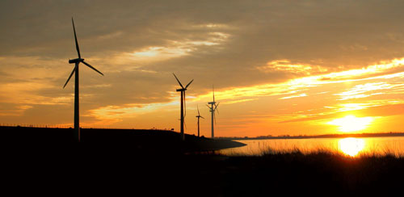

Duvidas Frequentes
Para começar, o que vem a ser a chamada energia eólica?
Por definição, energia eólica é aquela obtida pelo movimento do ar, pelos ventos.
Parece que não é de hoje que a energia eólica é usada pelo homem. Procede?O uso da energia eólica da forma mais próxima do que conhecemos hoje em dia (onde a vedete é a geração de energia elétrica) vem das antigas Pérsia e Babilônia, ainda na Antiguidade, quando foram criados os moinhos de vento, inicialmente usados para bombear água para irrigação de plantações e para moer grãos.
Há notícias de usos ainda mais antigos da energia eólica?Um dos usos mais antigos data da Pré-História, e ainda hoje é empregado: o homem descobriu cedo que podia usar o vento para impulsionar embarcações, e um dos primeiros instrumentos para aproveitar o vento para tal uso foram as velas - as naus egípcias, nesse aspecto, chegaram a uma sofisticação impressionante na Antiguidade; voltando ao presente, para se dar uma ideia, o navio-veleiro U20 "Cisne Branco", da Marinha do Brasil, tem as velas ao vento como propulsão principal.
Voltando à produção de energia, o que é necessário para se produzir energia elétrica a partir da força do vento?É preciso um equipamento denominado turbina ou aerogerador. Um conjunto deles forma uma usina, fazenda ou parque eólico.
É só impressão ou um aerogerador é como se fosse um ventilador ao contrário?A grosso modo, é isso mesmo: em um ventilador, usa-se a energia elétrica para movimentar as pás a fim de gerar vento; no aerogerador, é o vento que movimenta as pás, gerando energia elétrica.
Qual a potência gerada por uma turbina?
A potência, nas turbinas grandes, depende do diâmetro das pás (o conjunto é denominado rotor). Para um rotor de 10 m de diâmetro, a potência pode chegar a 25 kW; para um rotor de 80 m, até 2,5 MW. Estes valores de potência são tomados com a velocidade das hélices a 15 m/s (54 km/h aproximadamente).
Em média, quanto uma turbina grande pode fornecer de energia?Calcula-se, sob condições ideais, que uma turbina grande possa gerar 1,8 megawatts de potência; ou cerca de 5,2 milhões de kWh (quilowatts-hora) por ano. Tomando-se como base uma casa que tenha um consumo médio de 165 quilowatts-hora por mês, uma turbina grande em condições ideais permitiria abastecer umas 2.626 casas (o que corresponde, por exemplo, a 95% do Conjunto Santarém, na Zona Norte de Natal, conjunto que tem ao todo 2.764 casas) durante um ano inteiro.
E se a velocidade do vento passar de um ceto valor, as coisas não se tornam perigosas?De fato. Para isso, as turbinas têm mecanismos de segurança - em geral, quando o vento chega a 20 m/s (72 km/h), ou a turbina se desliga automaticamente ou sistemas especiais forçam de algum modo as pás a girarem menos rápido, como se fosse um "freio", até que a velocidade do vento volte a uma margem segura.
E o impacto ambiental?Apesar de ser considerada uma energia gerada de forma "limpa", sem precisar poluir nem devastar, ainda há que se considerar o impacto ambiental. As torres e hélices alteram, sim, a paisagem, a partir do aspecto visual; caso o parque eólico seja instalado em alguma região onde haja uma rota de migração de pássaros, estes podem ficar sob ameaça (a chance de um pássaro ser atingido em cheio por uma hélice aumenta), o mesmo podendo acontecer com morcegos; a instalação de uma turbina em uma região desértica de solo compacto pode causar erosão no solo; os aerogeradores emitem um ruído grave, de baixa frequência, que dependendo do nível pode ser incômodo à vizinhança; a estrutura pode causar interferência nas transmissões de televisão; e como as turbinas não funcionam sempre em sua capacidade máxima, até porque não há como controlar a velocidade do vento, os operadores de parque eólicas precisam ter um "Plano B" (geralmente com uma pequena quantidade de energia confiável e não-renovável) para as eventualidades de brisa (em geral, velocidades inferiores a 20 km/h) ou calmaria.
Quanto custa instalar uma turbina/aerogerador?Uma única turbina de grande porte, para geração pública de energia, com capacidade para 1,8 MW (quer dizer, praticamente toda a capacidade do parque eólico de Macau neste momento) pode custar até US$ 1,5 milhão (dólares americanos) instalada, sem contar os gastos com o terreno, as linhas de transmissão e outras questões relacionadas com a infra-estrutura. Na prática, um parque eólico tem custo aproximado de US$ 1 mil por quilowatt de capacidade - tomando como referência uma instalação nos Estados Unidos. Os valores no Brasil são mais altos que isto, principalmente por conta dos impostos.
Qual região possui o maior potencial em termos de energia eólica no Brasil?De longe, o Nordeste possui o maior potencial medido para energia eólica em todo o país - estima-se que possam ser gerados 75 GW (gigawatts) de potência na região, principalmente no litoral.
BRTurbinas - Duvidas
O que é um aerogerador ou turbina eólica?
O aerogerador ou turbina eólica é um equipamento que tem a capacidade de captar a energia cinética contida nos ventos e transformá-la em energia elétrica.
A evolução da tecnologia empregada resultou em aerogeradores de grande variedade de tamanhos, levando o mercado a segmentar-se em dois grupos distintos:
AEROGERADORES de PEQUENO PORTE (0,1Kw – 100Kw) (50CM – 21M)
AEROGERADORES de GRANDE PORTE (100Kw – 4500KW) (21M – 112M)
Existem principalmente duas topologias gerais de construção dos captadores eólicos: Os de EIXO VERTICAL e de EIXO HORIZONTAL.
Quais os elementos que compõem um aerogerador de pequeno porte de eixo horizontal?
Cada fabricante possui um tipo de construção diferenciada e estas diferenças determinam a potência do equipamento, nível de rotação, nível de ruído e segurança, porém basicamente um aerogerador é formado por 5 elementos:
• Rotor Eólico (PÁS) – O rotor é responsável por transmitir a energia cinética dos ventos para um eixo.
• Alternador – Recebe a esta energia eletromotriz e converte em energia elétrica.
• Sistema de direcionamento – Responsável pelo alinhamento do rotor em direção ao vento.
• Sistema de segurança – Atua como um sistema de proteção para momentos de ventos muito fortes.
• Controlador de Carga – Gerencia a geração de energia.